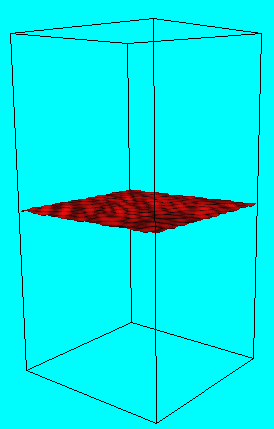
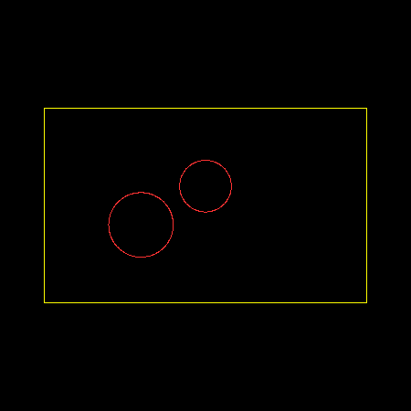

Front Tracking
Front tracking method is a Lagrangian method for the propagation of a moving manifold. Front tracking works by moving marker particles which represent the interface. It is distinguished from the marker particle method in that the particles are located only on the interface, rather than in a volume region near the interface, and in that the particles are connected to each other, to form a triangulated mesh (3D) or piecewise linear segments (2D) of the interface. It is significantly faster than other particle methods, since fewer particles (one or two in 2D) are used per cell in front tracking than the number used in typical particle method simulations. 2D bifurcations of interface topology in front tracking are resolved accurately through detection of interface intersections. In three dimensions, we use a local Eulerian reconstruction method. This method has the robustness of the Eulerian method while it maintains the high resolution and accuracy of the Lagrangian method.
The front tracking method has showed its advantage in the computation of several important physical problems such as the study of fluid interface instabilities, providing the first or the only physically validated simulation for the solution of turbulent mixing. Figure 1 shows the dynamic motion of the two fluid interface in the simulation of three dimensional Rayleigh-Taylor instability.

Supported by the ITAPS grant of DOE, we have extracted the geometrical component of the front tracking code as a stand-alone software library named FronTier-Lite. We have also built a user interface to allow easy loading of the library to any application program which requires the tracking of a moving front. This library provides a toolkit to make, copy and manipulate the data structures of the meshed interface. It contains functionality for mathematical calculations with respect to the moving interface and tools to couple the moving interface with computational domains bounded by the moving interface. The library hides the most complicated operations of mesh redistribution and topological bifurcation from the eyes of the user and provides a pleasant, smooth and accurate computation of the moving front. All the users need to do is to provide the initialization of the manifold and the velocity field for the propagation of the front. Figure 2 shows the three dimensional surface evolution of a sphere under a prescribed shear velocity field. The FronTier library also furnishes the calculation of such geometry-dependent variables as normal and curvature at the interface, thus enabling users to perform computation of interface propagation in the direction of the surface normal, when the speed that is a function of curvature.
Besides the study of the Rayleigh-Taylor instability, the FronTier library has also been applied to the simulation of diesel fuel-injection, a part of SciDAC combustion study and many other problems. For example, Figure 3 shows the application of the FronTier-Lite code in the simulation of the forest fire front with two initial fire fronts.
